La Punta Grisis è una di quelle cime di cui non si trova alcuna informazione da nessuna parte, né in letteratura né su internet; cime basse, alpinisticamente irrilevanti e dunque non degne nemmeno di uno sguardo. Così impone il consumismo escursionistico; a me invece nulla incuriosisce di più!
Mi sento quasi in colpa a pubblicarne qualcosa a riguardo, anche perché effettivamente durante tutto il tragitto non ho trovato né un segno, né un omino, né un taglio, né un ramo spezzato, né un ometto di vetta, insomma nulla di nulla (senza contare le non trascurabili difficoltà oggettive): a uno potrebbe quasi venire in mente di essere il primo a mettere il piede lassù!
Salgo per l'ennesima volta verso il ricovero Resartico, in una strana mattinata di un gelido agosto. Ogni volta osservo la lunga cresta che dal Lávara scende fino a Vetta Criuze... chissà!
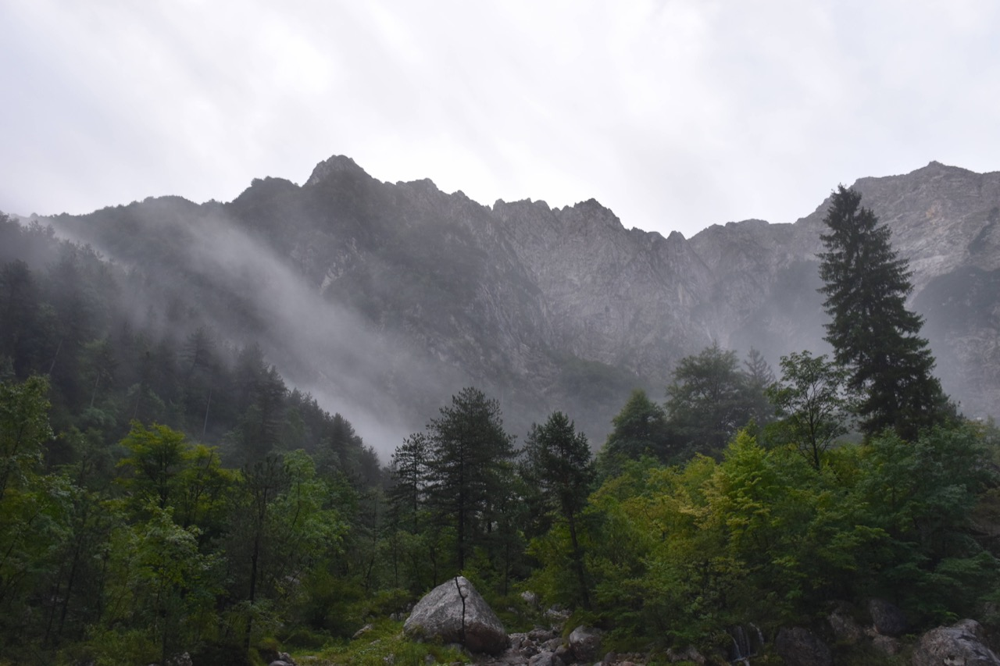Il meteo insolito mi regala alcune visioni molto affascinanti sul Palòn dei Zábus...
...e sulle sue possenti torri.
Pian piano abbandono la civiltà e mi inoltro nelle orride gole settentrionali del Lávara (tutta la zona è denominata Grisis - ovvero pietraia).
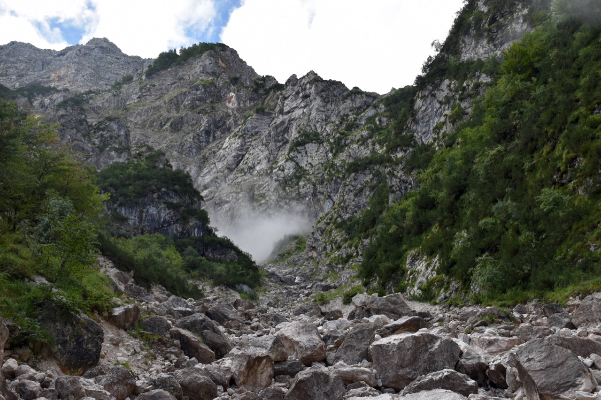L'angolazione verso il Palòn dei Zábus e le sue torri è davvero bella.
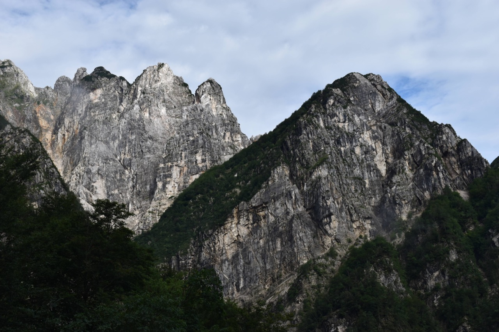Canali...
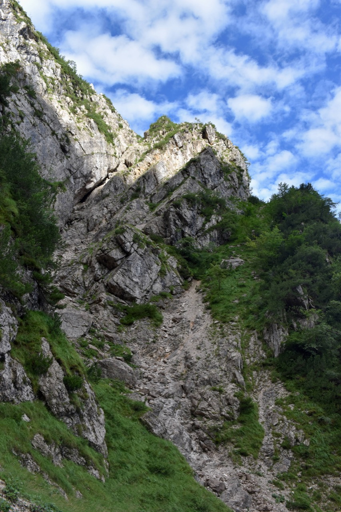canali...
e ancora canali!
Percorrendo l'ultimo canale arrivo ad uno stretto intaglio a ridosso della cresta della Punta Grisis, ma getto l'osso in quanto montare in cresta non è affatto semplice, almeno da quanto ho visto; vorrei certamente riprovarci però.
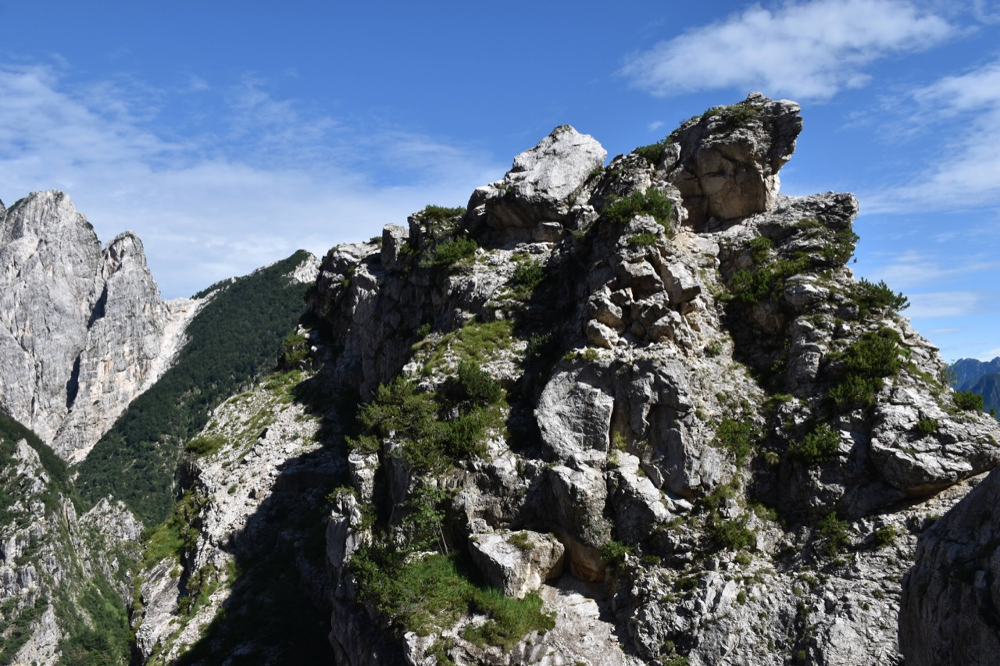Dall'intaglio vedo bene il Palòn dei Zábus, con il canalone ESE; mi ha sempre incuriosito quello strano blocco con caverne che sembra ostruire la forcella.
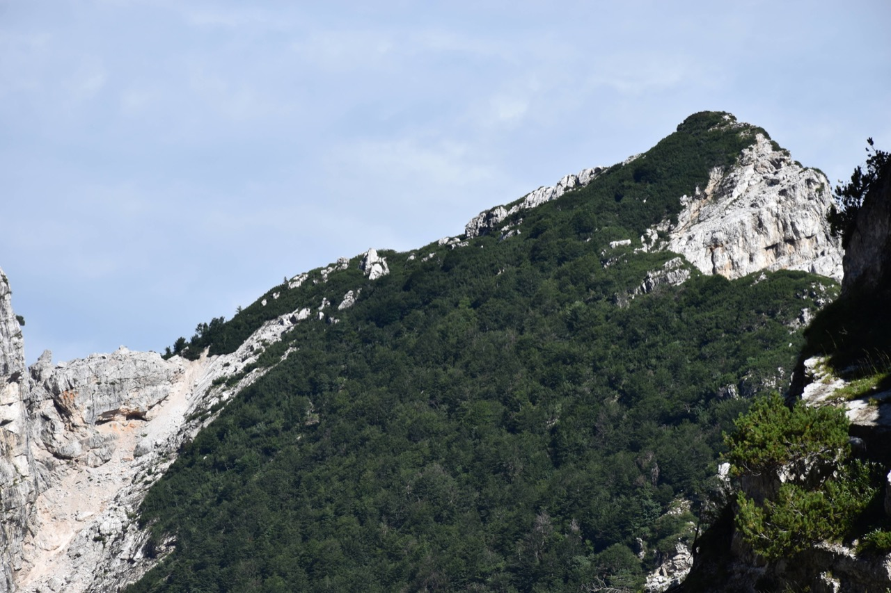Le due cime di Pale di Misdì, del massimo interesse viste da qui ma insignificanti da Sud e dalla val Lavaruzza.
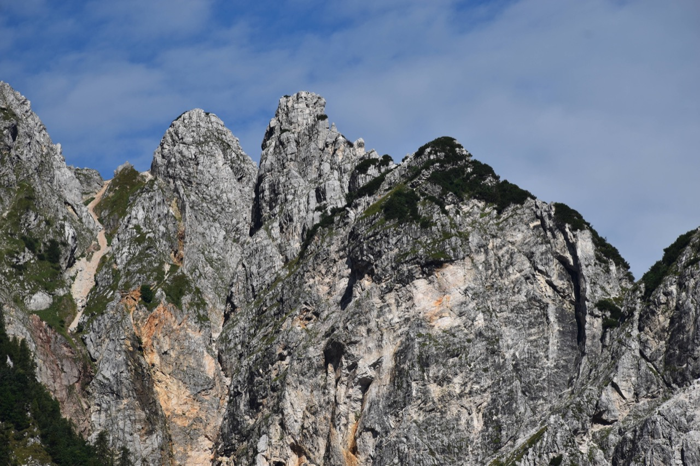Torno allora indietro. Prima di tutto provo a salire su un pulpito seguendo una traccia di camosci che avevo visto prima, anche se la cosa non mi convince affatto (avevo la mappa CTR sotto mano), ed effettivamente arrivato al culmine trovo un muro verticale di mughi. Passo allora alla prima opzione, che avevo inizialmente scartato: un impegnativo canale con passaggi di II.
Uno sguardo all'indietro.
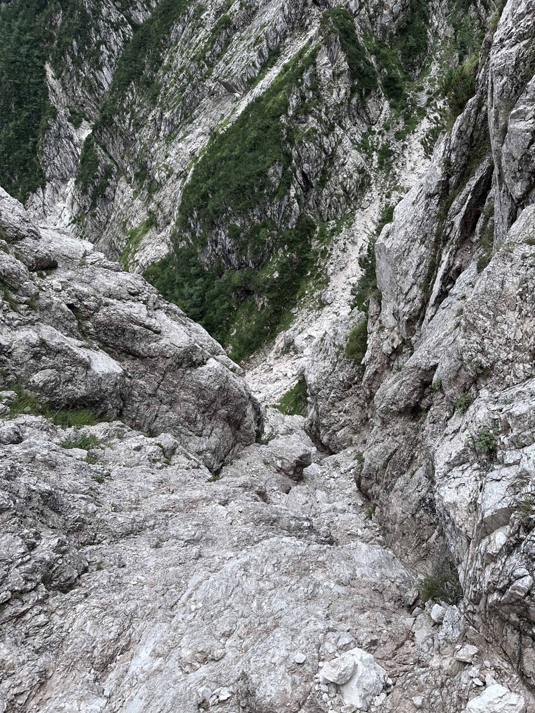Sbuco in cresta a ridosso della cima, comunque non banale per via della roccia assolutamente tremenda, tutto che si sbriciola.
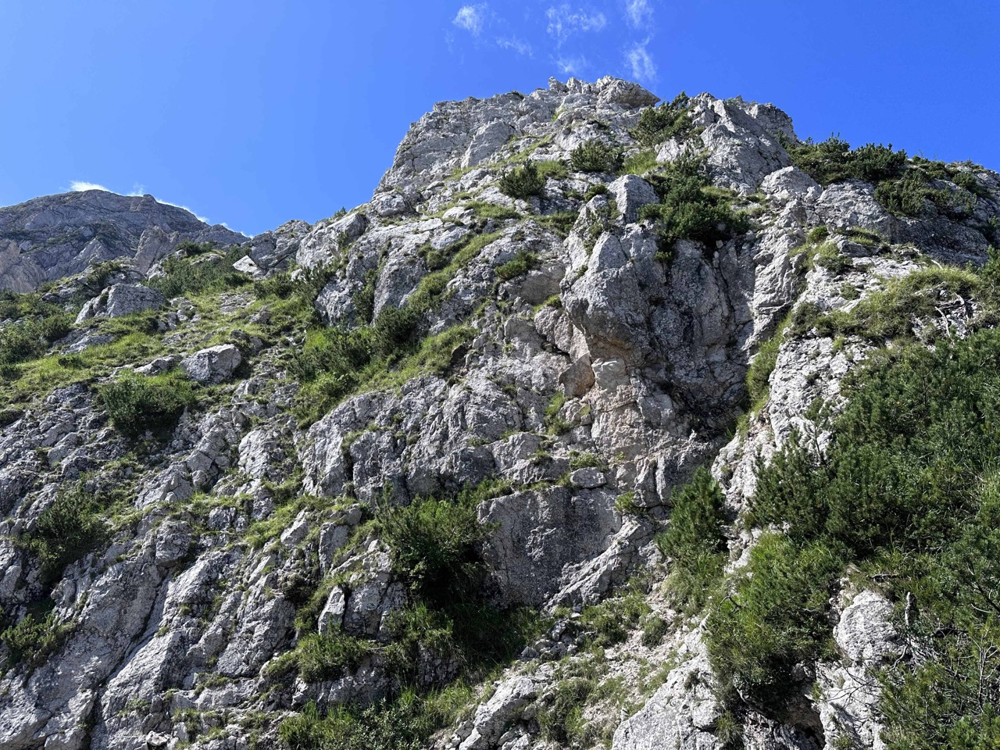Come già detto, in cima il nulla: ho costruito un bell'ometto, anche se col senno di poi lo rifarei in un luogo più stabile.
L'ambiente è davvero affascinante, ancorché orrido: tutto il versante Nord del Lávara è friabile e derupato. Il gran canalone a Ovest del Lávara, che si vede nella prima foto, è storicamente conosciuto come il modo più veloce per salire sulla cima partendo dal Resartico; si trova una relazione nella Guida delle Prealpi Giulie del Marinelli. Il canalone nella seconda foto invece presenta salti per nulla indiffenti nella parte alta.
Dalla cima si vede il Ricovero Resartico...
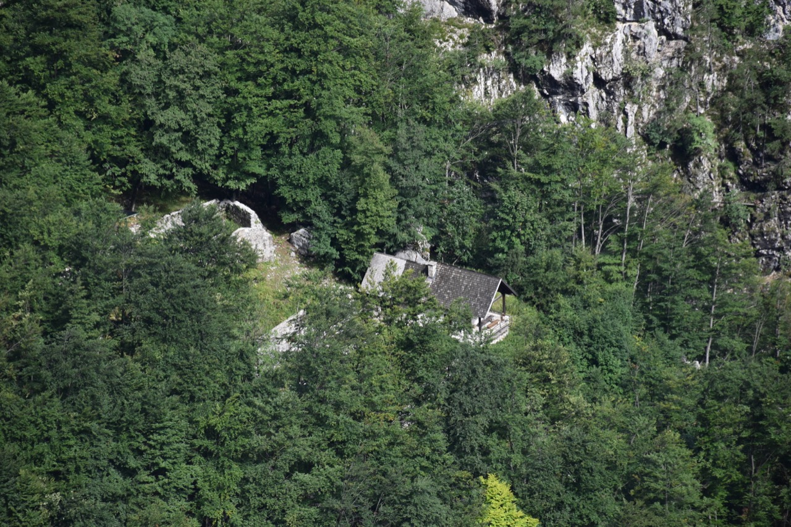...e viceversa!
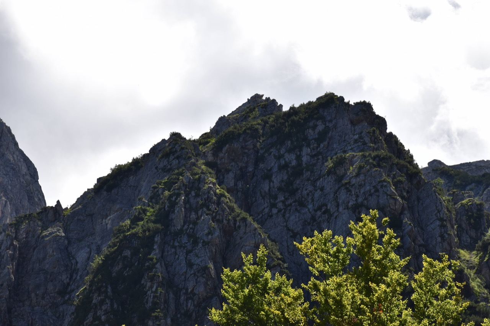